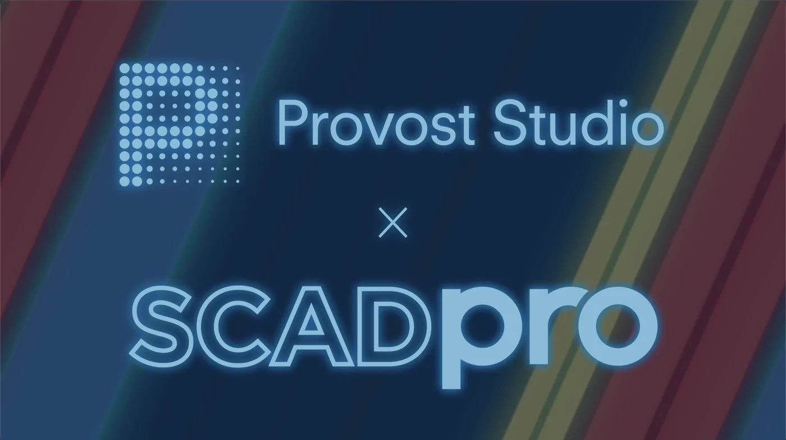
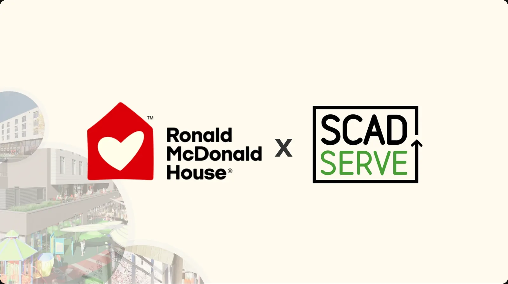
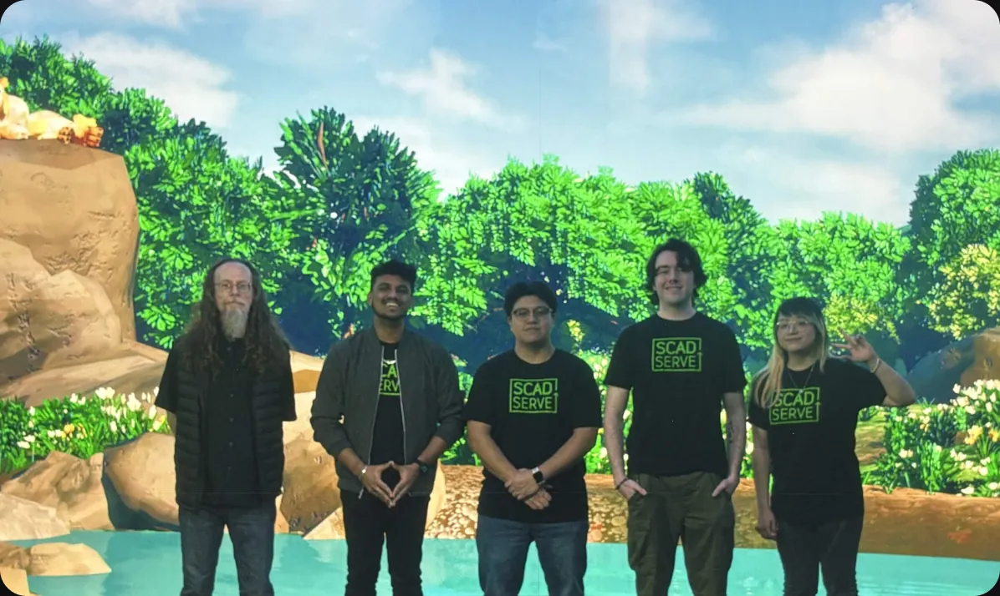

SCADServe X Ronald McDonald House
Technical & VR Manager
- Software:
- Unreal Engine 5.5 - Perforce - Meta Horizon SDK
- Team Size:
- 20

A collaborative initiative focused on augmenting the existing five-story playscape at the Ronald McDonald House. Our cross-disciplinary team engineered technology-driven interventions and experiential concepts designed to revitalize the environment, creating interactive moments that seamlessly balance educational value with restorative play.
Conceptualization & Ideation
Interactive Tech: Conceptualized and prototyped projection mapping, AR and VR mechanics to embed engaging digital interactivity directly into the physical playscape.
Immersive Design: Leveraged XR Stage (LED Volume) technology to design and visualize restorative "meditation pods," providing immersive, low-stimulus environments for families.
Tactile Enhancements: Bridged the gap between the digital and physical worlds by fabricating life-sized replicas of our custom 3D characters, anchoring the interactive elements within the tactile play space.
Technical Leadership & Execution
Asset & Pipeline Management
Managed the end-to-end 3D production pipeline. I directed the creation of environmental and character assets, ensuring a cohesive aesthetic across our distinct "Biomes of Georgia" and custom flora-themed creatures.
Virtual Production (XR Stage)
Coordinated and directed a professional Virtual Production shoot utilizing an LED Volume. We deployed a 3D digital twin of the RMH alongside our custom environments to deliver a high-fidelity, real-time proof of concept.

VR Twin Development
Spearheaded the engineering of a 1-to-1 Virtual Reality replica of the physical playscape. This immersive simulation functioned as a critical stakeholder tool, allowing investors to physically navigate and validate our proposed enhancements prior to physical construction.
Reflections Giving back to Society
This project carried profound personal and social significance. Tasked with enhancing the Ronald McDonald House Atlanta's new five-story playscape, our goal was to create a sanctuary for children undergoing intensive medical care and their families. By conceptualizing AR-driven interactive environments and restorative, low-stimulus pod devices, I learned how to leverage immersive technology to genuinely improve the emotional well-being of patients and parents. Using my technical skillset to create something that brings comfort to others is an accomplishment I am incredibly proud of, and it is a design philosophy I will carry forward in my career.
Stakeholder Relations
Served as the technical liaison for RMHC leadership. I turned complex VR and XR systems into clear, value-driven concepts, ensuring our technical execution perfectly aligned with their goals.
Cross-Disciplinary Synergy
Managed cross-functional deliverables across the art, design, and engineering disciplines. I maintained team momentum and strict production timelines despite rapid pivots in project scope and shifting XR technologies.
Helping Society
Leveraged immersive technology to directly improve the emotional well-being of pediatric patients and their families. Building systems that drive positive social change is a core design philosophy I will carry forward in my career.